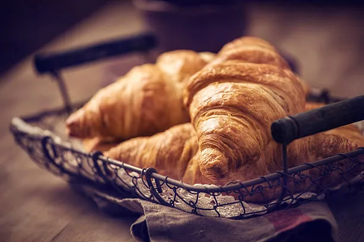

Voyage
Voyager occupe une place importante dans ma vie. Car elle me permet de découvrir de nouvelles cultures, traditions et de mode de vie.
Musique
La musique pour moi à un pouvoir apaisant car elle peut-être une source de réconfort, d’inspiration. Elle à ce pouvoir unique de toucher des émotions profondes.
Cuisine
La cuisine est l’une de mes passions que j’affectionne elle développe des compétences pratiques et créatives. Elle permet à apprendre à combiner des saveurs et maîtriser des différentes techniques de cuisine.
